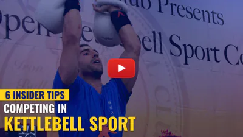

B624 · 6 Insider Tips from Competing in Kettlebell Sport
Hi {first_name},
One approach to becoming elite in a sport is to push as hard as possible. Always work harder. Always go for more. The word that comes to mind for that kind of training approach is…ouch.
I learned a ton from competing in kettlebell sport. The competition is grueling and if you want to be elite, you have to keep at it for years.
This week’s video is a peak behind the curtain of what it takes to become elite. The 6 tips I have are specifically for kettlebell sport, but you’ll see how they apply to training regardless of the sport.
Top 6 Tips for Kettlebell Sport:
Click here to watch this week's video, I hope you enjoy it!
 Train Intentionally, Mike Salemi
P.S. One of the keys to me restoring my body following injuries and competing at an elite level in KB Sport while feeling great was the addition of the balance training and stabilization training that Paul Chek taught me.
This Saturday, I've got a very special 90 min virtual workshop happening. I'm bringing in CHEK Institute faculty member and performance specialist Warren Williams to share and teach Balance Training. You will learn how to maximize a variety of balance tools (barefoot, swissball, dura disc, wobble board, etc), progress versions of balance drills in all 3 planes of movement, and functionally incorporate balance training into your fitness regime. No equipment is needed to participate, but I suggest bringing at least one if you can.
Also, if you cannot attend live, you will receive a viewing link for 72 hours.
Click here to register. I hope to see you there!
In Health, Mike
|